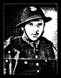

Genealogia RodzinyCZAKOW OCALI� OD ZAPOMNIENIA  Jarosław CZAKOW 24-08-1913 - 28-02-2006 Urodził się on w Zawierciu w rodzinie inteligenckiej, dnia 24 sierpnia 1913 r., z ojca Adama - majstra farbiarskiego największej fabryki Towarzystwa Akcyjnego „Zawiercie" i matki Natalii z Piotrowskich. Brat ojca Władysław (również majster drukarski w TAŻ). Uzdolniony muzycznie, w ramach hobby był twórcą i dyrygentem własnej orkiestry dętej, prywatnie wielki przyjaciel proboszcza ks. dziekana Franciszka Zientary. Młody Jaroław ukończył Prywatne Gimnazjum Filologiczne Męskie „Stowarzyszenia Nauczycielskiego" w Zawierciu w 1935 r. W roku szkolnym 1935/36 został studentem germanistyki Uniwersytetu Jagiellońskiego w Krakowie. Wybuch II wojny światowej w 1939 r. zniweczył plany życiowe wielu młodych ludzi, również Jarosława wciągnął w wir wojny i drugiej poniewierki na obcej ziemi, z niezłomną wiarą w odzyskanie wolnej Ojczyzny z pomocą państw sojuszniczych. Młodszego brata Jana Niemcy wysłali do niewolniczej pracy do Włoch. Tam udało mu się uciec i wstąpił do antyniemieckiej partyzantki włoskiej. Po wkroczeniu armii gen. Andersa do Włoch wstąpił do tej armii i wraz z nią dzielił losy aż do zakończenia wojny. Po wojnie osiedlił się na stałe w Anglii (Manchester), ożenił się z Wandą - Polką, która została deportowana z rodziną do Rosji (matka i brat tam zginęli), a ona uratowała się i wracając z armia Andersa przez Iran dotarła do Anglii. Najmłodszy brat Kalikst osiedlił się po II wojnie światowej w Sandomierzu. Jako architekt brał udział w renowacji miasta Sandomierza. O swojej drodze wojennej, internowaniu, a także długiej tułaczce i życiu na obcej ziemi, w oczekiwaniu na powrót do umiłowanej i wolnej Ojczyzny, opowiada zawiercianin Jarosław Czakow, ponownie mieszkaniec Zawiercia od 1996 r. Oto jak wspomina i relacjonuje swoje przygody wojenne: „Wybuch wojny w 1939 r. zastał mnie na przeszkoleniu w podchorążówce 5 Pułku Strzelców Podhalańskich w Przemyślu. Choć minęły już 63 lata pamiętam pobyt w podchorążówce. Głęboko zapadły mi w sercu, pewne epizody z tamtych dni, a szczególnie, gdy rankiem na placu apelowym, przy wciągnięciu polskiej flagi na maszt, towarzyszyła stara piękna pieśń „Kiedy ranne wstają zorze...", a wieczorem po skończonych zajęciach po ściągnięciu flagi brzmiała znana pieśń „Wszystkie nasze dzienne sprawy". To wzbudzało moje uczucia patriotyczne i dumę, że jestem Polakiem i katolikiem. W wojsku konsekwentnie realizowana była triada „Bóg-Honor-Ojczyzna", tak wśród przełożonych, jak również podwładnych żołnierzy. Pamiętam także uroczysty dzień, największego święta polskiego żołnierza (15 sierpnia). Zaczął się uroczystym nabożeństwem, w południe uroczystym i wystawnym obiadem, a wieczór kończył się huczną zabawą i tańcami z zaproszonymi gośćmi. Te miłe wspomnienia mącą czarne i złowrogie wydarzenia z l września 1939 r. W słoneczny dzień, z powietrza samoloty nieprzyjacielskie siaty śmierć i spustoszenie. Po krótkich walkach obronnych, na skutek miażdżącej przewagi wroga przemieszczaliśmy się w kierunku południowym do granicy polsko-węgierskiej. Zostaliśmy wcieleni do frontu południowo-wschodniego pod dowództwem gen. Władysława Wieczorkiewicza. W opuszczonych koszarach w Stryju, zebrała się rada wojenna i zaproponowała żołnierzom wybór: wracać do domu, lub przekroczyć granicę węgierska, a stamtąd starać się dotrzeć do Francji lub Anglii. Niewielu wybrało powrót. Prawie wszyscy zdecydowali się pozostać i walczyć dalej. Entuzjazm i chęci do walki ze śmiertelnym wrogiem panował powszechnie wśród żołnierzy, byli gotowi ponieść największa ofiarę swego życia. Szliśmy w świat z uczuciem goryczy, że nasi sprzymierzeńcy (Francja i Anglia) nas opuścili. Spało się niewiele, a jadło jeszcze mniej. Generał Stefan Dembiński przyjął ostatnią defiladę przed przekroczeniem granicy. Pod obstrzałem niemieckiej artylerii (na szczęście z niewielkimi stratami) przekroczyliśmy granicę. Nasza podchorążówka prawie w całości znalazła się w Kiszbodaku (Węgry) w barakach po jednostkach saperskich. Pierwszą noc spędziliśmy pokotem na słomie rozścielanej na ziemi. Była to noc niespokojna, bo wielu nabawiło się biegunki, a gdy chory musiał opuścić „wygodne łoże", zwolnione miejsce natychmiast zajmował inny cierpiący żołnierz. Warunki sanitarne były trudne. W pierwszym dniu mycie i pranie bielizny odbywało się w Dunaju. Często rankiem pędziliśmy na brzeg Dunaju, by tu doprowadzić się do przyzwoitego stanu. Po jakimś czasie Węgrzy zamienili nam mundury, a jednocześnie zostaliśmy internowani. Rozpoczęło się życie za drutami. W każdą niedzielę pod eskortą „kogutów" (tak nazywaliśmy strażników węgierskich w związku z wyglądem czapek), byliśmy prowadzeni do kościoła. Wśród żołnierzy rodziła się myśl i rozpoczęły się przygotowania grupowe do ucieczek na Zachód. Dla bezpieczeństwa rodzin w kraju przyjmowano różne pseudonimy. Ja przyjąłem, zawód rolnika ps. Józef Jarosławski. Pod pretekstem wyjazdu do konsulatu w Budapeszcie, żołnierze zdobywali przepustki. Od paserów zdobywali cywilne ubrania i uciekali na Zachód. W 1940 r. udało mi się opuścić Węgry przez Jugosławie i Włochy, dotarłem do przygranicznej miejscowości Modana (Francja), skąd zostałem skierowany do Bazy Polskiej w Coetąuidan do organizujących się Polskich Sił Zbrojnych gen. Władysława Sikorskiego. Stamtąd wyszła I dywizja, która walczyła w Norwegii pod Narwikiem, 2 dywizja walczyła we Francji na linii Maginot. Ta dywizja została rozbita, część żołnierzy dostało się do niewoli niemieckiej, a większość przekroczyła granicę szwajcarska i tam zostali internowani do końca wojny. 3 dywizja w trakcie formowania się została rozbita pod Redon (Bretania). Niektórym udało się dotrzeć do Anglii, a reszta wegetowała we Francji. Po klęsce Francji, życie dla emigrantów z Polski stało się trudniejsze. Powstał rząd kolaboracyjny w Vichy pod komendą marszałka Petain, który zwalczał podziemny antyhitlerowski ruch partyzancki. Rozpoczęły się aresztowania, procesy sądowe, m. in. zaocznie skazano na karę śmierci gen. de Goulle`a za rekonstrukcję armii francuskiej na terenie Anglii. W tym czasie zostałem pojmany przez hitlerowców wraz z innymi i wywieziony do portu Yannes (Bretania), gdzie zgromadzono nas w pustych halach fabryki samochodów. Spaliśmy na betonie. Karton służył za siennik, a drugi za kołdrę. Stamtąd wywieźli nas do miejscowości Abville, blisko granicy belgijskiej, gdzie koczowaliśmy pod namiotami w zbiorowisku różnych narodowości, a byli tam: Arabowie, Bretończycy, Francuzi i Polacy. Hitlerowcy pod groźbą rozstrzelania ostrzegali nas przed ucieczką. Po dwóch tygodniach koczowania, załadowali wszystkich do wagonów bydlęcych i wywieźli w okolice Hamburga, do obozu wybudowanego na palach (bagniskach), przez jeńców polskich. Baraki te budowane pospiesznie nie spełniały żadnych norm ludzkich. Pracowaliśmy bardzo ciężko przy karczowaniu lasu. Bytem zmuszony do dźwigania ciężarów ponad moje siły. Przygotowywaliśmy teren pod budowę drogi. Złe wyżywienie, ciężka praca i bardzo trudne warunki bytowe doprowadzały do ogromnego wyczerpania, a nawet do utraty przytomności. Po ukończeniu budowy drogi wywieźli nas na północ Niemiec do landu Schleswig-Holstein w pobliżu miasta Flensburg przy granicy Duńskiej (Stalag XB nr ew. 67985). Tu zostaliśmy wyzwoleni przez Anglików. Już 2 maja 1945 r. zostałem wcielony do Polskich Sil Zbrojnych pod komendą angielską. Dnia 21 stycznia 1947 r. przydzielono mnie do polskiego ośrodka demobilizacyjnego w Calais, ostatecznie zostałem zdemobilizowany 30 kwietnia 1948 r. W 1949 r. osiedliłem się we Francji w mieście Lilie. Tam założyłem rodzinę, wychowałem 3 synów, którzy pracują jako lekarze. Po śmierci żony postanowiłem spełnić młodzieńcze marzenia i wrócić do wolnej Polski. Tu zetknąłem się z koleżanką szkolnych lat Zofią sympatią sprzed 1939 r., obecnie również wdową po poruczniku Henryku Krzakiewiczu, działaczu, założycielu i dowódcy AK w Zawierciu. W 1995 r. zawarłem związek małżeński z Zofią Krzakiewicz. W okresie II wojny światowej była ona łączniczką AK (wspólna praca z mężem). Z tego powodu przeżyła ciężkie chwile. Po aresztowaniu męża, który został osadzony w Oświęcimiu była przesłuchiwana na gestapo będąc w 5 miesiącu ciąży. Bito ją i torturowano. Sama wychowała dwójkę wspaniałych dzieci, jak również troje dzieci siostry Genowefy i Józefa Snopkiewiczów, których w 1940 r spotkała wielka tragedia. Porucznik rez. J. Snopkiewicz - kierownik szkoły w Skłobach za pomoc Oddziałowi Hubali został rozstrzelany, a wieś doszczętnie spalona. Pani Zofia zaopiekowała się rodziną Snopkiewiczów, wychowała ich dzieci, wśród których była Halina Snopkiewicz (uczennica II LO), znana pisarka powieści m. in. o Zawierciu („Słoneczniki" i inne). Wychowywała również córkę pisarki Haliny. Zofia Krzakiewicz to szanowana i zasłużona mieszkanka Zawiercia, patriotka, wrażliwa na biedę i nieszczęścia innych, zawsze pomagająca ludziom znajdującym się w trudnych sytuacjach życiowych. Rozmowę przeprowadził - Pan Piotr GRZYB z Towarzystwa Miłośników Ziemi Zawierciańskiej w 1992 roku - (dziękujemy za oryginalny materiał - Panie Piotrze) Jarosław Czakow - odszedł od nas - w Zawierciu - 28 lutego 2006 roku. CZEŚĆ JEGO PAMIĘĆI ! ! ! |